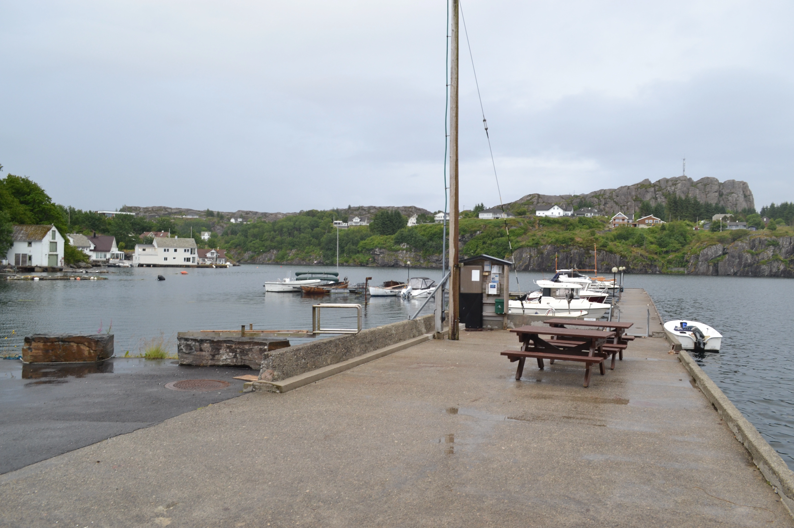
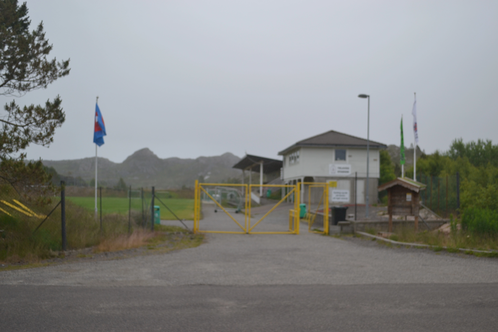

i telavåg har vi et museum som går i dybde på den rike historien til telavåg og krigen. les mer her. vi har også en tur app hvor du kan ta inn den historiske delen av telavåg mens du tar inn den nydlige naturen.
Telavåg er en fin naturik plass med masse å se og oppleve. vi har også kunstverk og andre gode plasser å se som foreksempel gamle kanon utstillingene.

om historie ikke er din stil har vi også god traadisjonelt arbeid som gårdsbruk og fisking. det er mange ting og se og oppleve i telavåg et liv er ikke fulført uten.

Vi har også vårt eget fottball lag og stadion og TIL er deres navn.
mitt navn er Leah Yoimiya Johansen. jeg kommer fra telavåg og jeg vil være deres guide for i dag jeg håper jeg kan vøre lærende og til hjelp om noe oppstår gjerne kontakt meg på email: Jobbjohansen@gmail.com
"fantastisk næringsområde og fine naturstier." 7,3/10 - ung telavåger
"nydlig plass for mine barn og vokse opp. telavåg gir en frihet du ikke får i byen" 8/10 -mor fra telavåg
"veldig fin plass å bo og folkene er herlig" 6/10 -innflytter i telavåg
"gode turtereng og fantastiske utsikter. naturen er godt tatt vare på" 10/10 -tur gåer